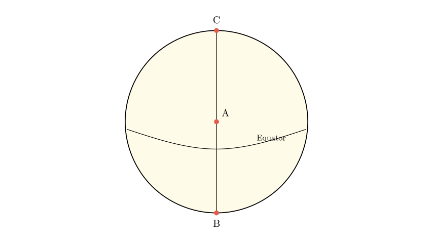
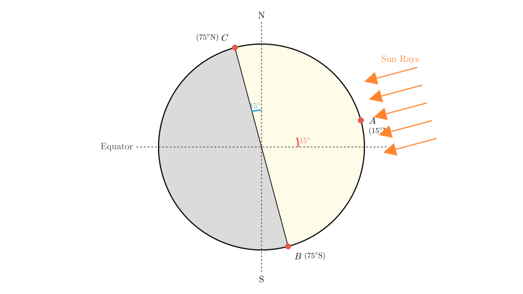
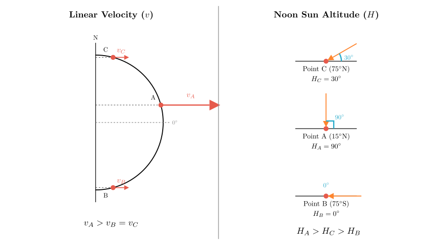

Problem Statement: The area shown in the figure below is the daylight hemisphere (day hemisphere). A is the center of the circle. The latitude of point B is 75°. The west side of point A is the Eastern Hemisphere, and the east side is the Western Hemisphere. Based on this, answer the following questions:
(1) At this time, the geographic coordinates of the subsolar point (solar direct point) are _, and the geographic coordinates of point C are _. At this time, Beijing time is _. (2) The order of the linear velocities of points A, B, and C in the figure is _ (use ">", "<", "=" symbols); the order of the noon sun altitude angles of the three points is ___ (use ">", "<", "=" symbols).
Solution Approach: 1. Analyze the Geometry: Identify that the circle represents the terminator (boundary between day and night) and point A is the subsolar point because it is the center of the day hemisphere. 2. Determine Coordinates: Use the hemisphere definition to find the longitude of A. Use the latitude of B and the position of the equator to find the latitude of A (solar declination) and C. 3. Calculate Time: Use the longitude difference between the subsolar point and Beijing to calculate the local time. 4. Compare Physical Quantities: Compare the linear velocity based on latitude ($\cos \phi$) and calculate the noon sun altitude using the formula $H = 90^\circ - |\phi - \delta|$.

Step 1: Analyzing Coordinates of the Subsolar Point (A)
Longitude: The problem states that "West of A is the Eastern Hemisphere, and East of A is the Western Hemisphere." The boundary between the Eastern and Western Hemispheres is defined by the meridians $20^\circ$W and $160^\circ$E. The specific boundary where the west side is East (E) and the east side is West (W) is the $160^\circ$E meridian. Therefore, the longitude of point A is $160^\circ$E.
Latitude: Point A is the center of the day hemisphere, making it the subsolar point (where the sun is directly overhead). The distance from the subsolar point to the edge of the day hemisphere (the terminator) is always $90^\circ$ along a great circle.
Result for A: $(15^\circ\text{N}, 160^\circ\text{E})$.
Step 2: Analyzing Coordinates of Point C
Result for C: $(75^\circ\text{N}, 20^\circ\text{W})$.

Step 3: Calculating Beijing Time
Answer for (1): * Subsolar point: $(15^\circ\text{N}, 160^\circ\text{E})$ * Point C: $(75^\circ\text{N}, 20^\circ\text{W})$ * Beijing Time: $9:20$

Step 4: Comparing Linear Velocity and Noon Sun Altitude
(a) Linear Velocity: * Earth's rotation linear velocity decreases from the equator to the poles. It is proportional to the cosine of the latitude: $V = V_{\text{equator}} \times \cos(\text{latitude})$. * Latitudes: A ($15^\circ$), B ($75^\circ$), C ($75^\circ$). * Since $15^\circ < 75^\circ$, $\cos(15^\circ) > \cos(75^\circ)$. * Therefore, the velocity at A is the greatest. B and C have the same absolute latitude, so their speeds are equal. * Result: $A > B = C$
(b) Noon Sun Altitude: * The formula for noon sun altitude ($H$) is $H = 90^\circ - |\phi - \delta|$, where $\phi$ is the local latitude and $\delta$ is the solar declination ($15^\circ$N). * Point A ($15^\circ$N): On the latitude of direct sunlight. $$H_A = 90^\circ - |15^\circ - 15^\circ| = 90^\circ$$ * Point C ($75^\circ$N): $$H_C = 90^\circ - |75^\circ - 15^\circ| = 90^\circ - 60^\circ = 30^\circ$$ * Point B ($75^\circ$S): $$H_B = 90^\circ - |-75^\circ - 15^\circ| = 90^\circ - |-90^\circ| = 0^\circ$$ (Note: Point B is exactly at the terminator, experiencing sunset/sunrise at noon, which corresponds to the limit of polar night). * Result: $A > C > B$
Final Answer Recap: (1) Subsolar point: $(15^\circ\text{N}, 160^\circ\text{E})$; C coordinates: $(75^\circ\text{N}, 20^\circ\text{W})$; Beijing time: 9:20. (2) Linear Velocity: $A > B = C$; Noon Sun Altitude: $A > C > B$.